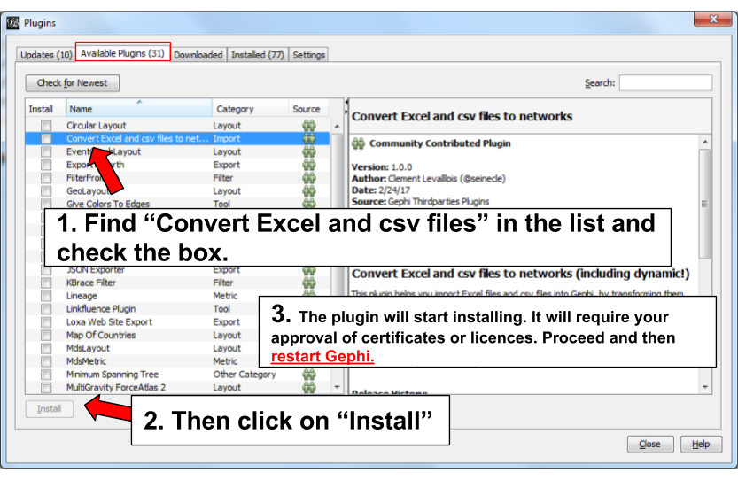
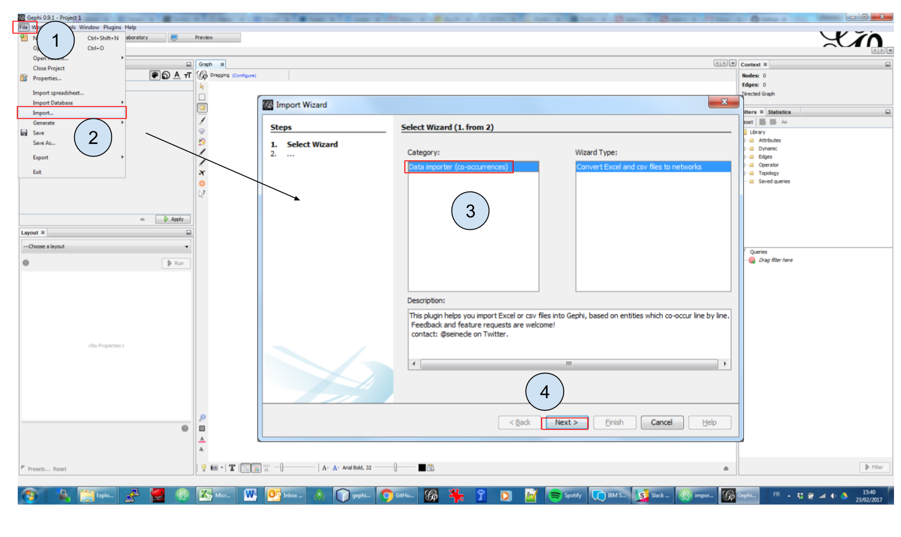

Failed to generate image: can't modify frozen
graph g {
rankdir="LR";
client -- product [ label="purchased" ]
}Creating a network from a table of cooccurring items
last modified: 2017-10-06
'Escape' or 'o' to see all sides, F11 for full screen, 's' for speaker notes
Presentation of the plugin
This plugin is created by Clement Levallois.
It converts a spreadsheet or a csv file into a network.
This plugin enables you to:
Start from a data table in Excel or csv format
In the data table, each row describes an "occurrence" (of an event, a purchase, a relation, etc.)
In columns A, B, C, D, we have the entities involved: column A for persons, column B for what they bought, etc.
Connections will be created between entities, when they appear in the same occurrence (so, when they are on thee same row)
Occurrences can have dates, multiple instances of an entity can be listed in a given column.
1. The input

Figure 1. An Excel file
2. The output

Figure 2. Resulting network
Installing the plugin

Figure 3. Choose the menu Tools then Plugins

Figure 4. Click on the tab Available Plugins

Figure 5. Install the plugin and restart Gephi
Opening the plugin

Figure 6. Open the plugin via the menu File - Import
Using the plugin
2nd panel

Figure 7. Select a file
Is your file with a header?

Figure 8. A file without headers
Figure 9. A file with headers
To describe the next screens of the plugin, we will take the example of the Excel file just shown, with headers.
3rd panel

Figure 10. Which entities should be the nodes?
What does this panel mean?
If you look back at the Excel file, you see that we have "Clients" and their "Purchases".
→ This means we can build 2 different types of networks, depending on our needs:
A network showing clients and products, with relations representing purchases from a client to a product.
To create this kind of networks, choose "Client" in the upper window, and "Purchases" in the lower window of the plugin screen.
Or a network where 2 products are connected, if one client puchased them together.
Failed to generate image: can't modify frozen
graph g {
rankdir="LR";
a -- b [label=" purchased together"]
a [label="product 1"];
b [label="product 2"];
}To create this kind of networks, choose "Purchases" in the upper and lower windows of the plugin screen.
4th panel

Figure 11. Choosing which delimiter is used
This 3rd panel asks: in our Excel file, how are different items separated in a given cell? In our example, we have used commas: the lists of products purchased are comma-separated:

Figure 12. commas shown in red
5th panel
This panel allows you to specify whether the relations are dynamic in time, or not.
In this case, you need an extra column (column C), where a date is shown. We don’t cover this case here.
(read the tutorials on dynamic networks for a starter)
6th panel

Figure 13. Options panel
"Create links between Purchases agents and links between Purchase agents"
→ If you chose a Product ←→ Product kind of network in panel 3, then of course you are interested in links between products. Check the box.
→ But if you chose a Client ←→ Product kind of network in panel 3, what you need is less obvious.
Let’s take the example of client I, who purchased a table and some chairs:
Checking the box will create a network where:
Failed to generate image: can't modify frozen
graph g {
rankdir="LR";
a -- b [label=" purchased"]
a -- c [label=" purchased"]
b -- c [label=" co-purchased"]
a [label="client I"];
b [label="table"];
c [label="chairs"];
}Not checking the box will create a network where:
Failed to generate image: can't modify frozen
graph g {
rankdir="LR";
a -- b [label=" purchased"]
a -- c [label=" purchased"]
a [label="client I"];
b [label="table"];
c [label="chairs"];
}"Remove duplicates"
→ Check this option if your Excel or csv file has duplicate rows that you’d like to be removed
"Remove self-loops"
If a Client has purchased tables twice, so that we have "table, table" in a cell: this would create a link from table to table (a self loop).
→ Check this option if you’d like self loops to be removed.
7th panel
This panel recaps all the settings. Click on finish to create the network.
The end!
Visit the Gephi group on Facebook to get help,
or visit the website for more tutorials